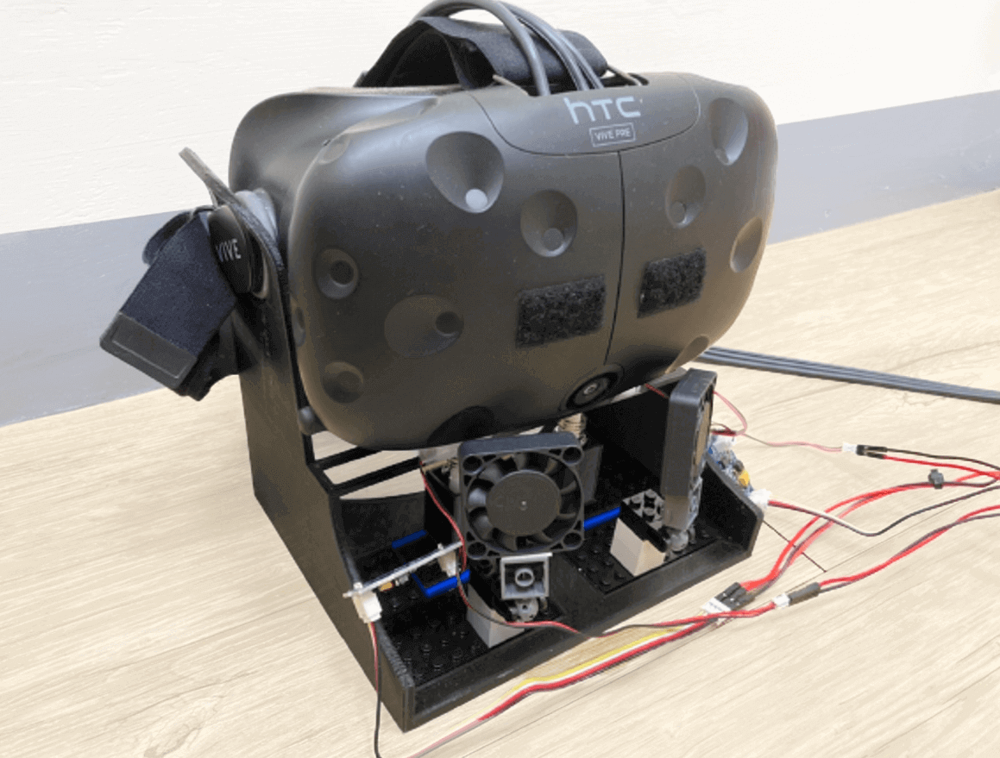
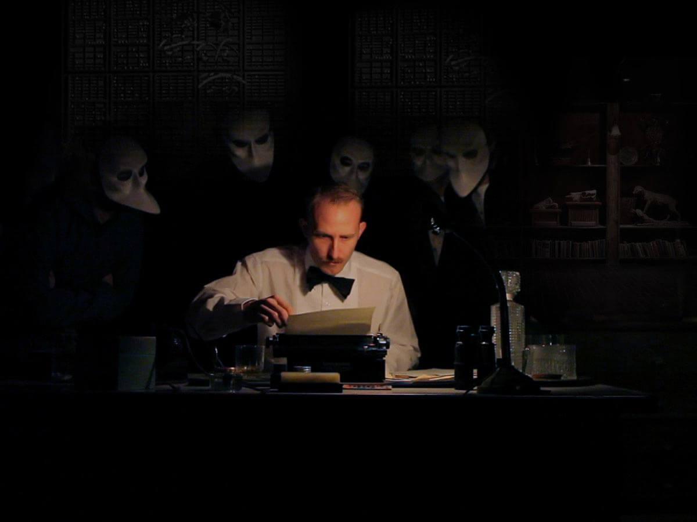

HCI Researcher
Physiological Computing
Human Computer Integration(HInt)
Actively Applying for HCI Ph.D.
About
I am an HCI researcher who want to pursue a Ph.D. I am interested in tangible user interface on body and human-computer integration (HInt) devices for physical and cognitive enhancement. My research interest is to break the boundary between the human body and devices, to meld users and tech objects being used. The tangible interfaces experiences apply to coupling users and systems, a medium to carry ambiguous interfaces instantiated among humans, devices, the physical world, and cyberspace.
I am currently working with Prof. Min-Chun Hu in NTHU, developing a portable device about the immersive experience of olfactory feedback in VR. I'm also working with Prof. Chun-Shu Wei, a project about moving stimuli and the modulation of peripersonal space in Virtual Reality.
Education
National Tsing-Hua University, Hsinchu, Taiwan09/2015 - 06/2020
Research Assistant, IDD Lab, NCTU- advised by Prof. Da-Yuan Huang07/2019 - 10/2019
GREENS: Revealing invisible environment data as an auto-generated melody with human collaboration
GREENS was a system that would auto-generated music from invisible environmental data and humans' status. GREENS provide a fluid experience by serial voice inputs, entailing the outputs of jazzy AI music, sci-fi projecting images, and a mechanical ecosystem model. I used Google Dialogflow to build the voice-based interface. Users' voice inputs enable the Coral TPU board to trigger the pygame module to play the auto-generated jazz music produced by Tensorflow and pymidi module, and also would change our projecting images controlled by Madmapper.
GREENS won the Jury's Choice Award Honorable Mention and People's Choice Award.
Virtual Visual Cues Influence the Olfactory Perception

Research Assistant, MISLab, NTHU
- advised by Prof. Min-Chun Hu07/2019 - Present
I designed a portable olfactory display for VR and an experiment to investigate whether visual cues can fool or stimulate the VR smell experience, regarding intensity and directionality. The display employed an Arduino as a controller to change the different levels of olfactory characteristics. The olfactory display unit is composed of a scent generator and a scent deliverer. Regarding the scent generator, I put an absorbent cotton core inside a reservoir filled with essential oil to absorb the scent generator's oil. Besides, I attached an ultrasonic atomizer to the cotton core to diffuse the odor into the air. For the scent deliverer, a 5-V fan with a two-pin connector provided the active airflow delivery. I used a MOSFET to modulate the airflow intensity by pulse-width modulation (PWM). The result showed cross-modal interactions between visually virtual odor cues in VR and real olfactory stimuli from the device.
This research has been successfully published at IEEE VR 2021. You can read here, DOI: 10.1109/VR50410.2021.00050
Moving Stimuli and the Modulation of Peripersonal Space in VR
Research Assistant, The Cognitive Engineering and Computational Neuroscience Lab, NYCU - advised by Prof. Chun-Shu Wei06/2021 - Present
I join CECNL Lab with my side project about backward Peripersonal Space(PPS) augmented human device. After discussions with Professor Chun-Shu Wei, we pivoted the research direction to moving stimuli and the modulation of peripersonal space in a virtual reality environment. We want to investigate how the peripersonal space would be formed in virtual reality by the different motion patterns and discuss its influence on the immersion experience. Previous works have realized the original experiments in the VR environment. Also, they’ve discussed how different object appearances or environments would affect the PPS boundary. However, lack of studies discusses the object moving patterns that would only exist in VR environments would affect the PPS forming. As a result, we aim to discuss the relationship between PPS and some unreal motions such as a discrete move or random appearance which only exist in a VR environment. Our contribution is to find out that the unrealistic moving patterns would/would not make people form their peripersonal space.
The experiment has five modes, respectively, continuously approaching to the participants, continuously moving away from the participants, discretely approaching to the participants, discretely moving away from the participants, and randomly appearing at the position(, which we define as discrete random move). A continuous move means the ball’s motion is smoothly moving from the starting point to the end point with a specific speed, mimicking the real world situation. On the other hand, a discrete move represents a ball would only appear on the specific points and stay there for some time and then appear to the next position.
The ball would approach/move away the participants at a constant speed and start at position 0m from the front of the participants, which is 17m. In this range of the movement, there were five equal-distance positions including at the starting point and the ending point. When the balls went through one of the five points, it would randomly activate the haptic feedback by HTC controllers. Each point is, respectively, P1 (3m), P2 (6m), P3 (9m), P4 (12m) and P5 (15m). Once the participants sensed the haptic feedback, they would push the button of the hand controllers to record the reaction time (calculating from activating the wearable device). Besides, there was only one haptic feedback in each trial. Each participant had to test 20 trials for each mode, 12 active trials and 8 inactive trials. We calculated the PPS boundary by the participants’ reaction times. We used a sigmoidal function to describe the relationship between tactile (RTs) and the timing at which haptic stimuli were delivered. The time of haptic stimulation was that experimental time P1 corresponds to 300 ms, P2 to 800 ms, P3 to 1500 ms, P4 to 2200 ms, and P5 to 2700 ms. The sigmoidal function was described by the following equation:
where x represents the independent variable (i.e., the timing of cold feeling delivery in ms), y the dependent variable (i.e., the reaction time), ymin and ymax the lower and upper saturation levels of the sigmoid, xc the value of the abscissa at the central point of the sigmoid, which is the value of x at which y = (ymin+ ymax)/2 and b establishes the slope of the sigmoid at the central point. And xc would be the point of the PPS boundary.
Research Assistant, Everyday Interaction Lab, NYCU - advised by Prof. Ying-Yu Chen07/2020 - Present
I join Professor Ying-Yu Chen's weekly Research Through Design(RtD) study group. It is an informal seminar to analyze some classic and influential papers about RtD and discuss some research topic trends in the HCI community. This summer, the study group decided to execute our own speculative design by design fiction. My fiction is about a dream interface, a game console that controls the user's brain through decoding users' brainwaves and encoding the information by changing the electromagnetic field to create any lucid dream.
Collaborative and Tangible VR Riprap Tutorial for Children
Research Assistant, Everyday Interaction Lab, NYCU - advised by Prof. Ying-Yu Chen07/2020 - Present
We want to preserve evanescent Taiwanese Hakka style riprap techniques due to urbanization by developing a collaborative and tangible VR riprap tutorial for children. We choose to build a VR multiplayer system since ripraps need many people to build together, while the tangible way in VR, such as realizing gravity, enables children to experience intuitively while breaking the spatial limits but remaining some trueness. The pictures show our field studies and our qualitative research process.
The Young Entrepreneurs of the Future program01/2017 - 12/2017
LimbCare uses temperature control technology to avoid all the troubles of rehabilitation preparation in advance, allowing users to do hot and cold compresses in precise temperatures and periods at any time and anywhere. LimbCare also integrates information and other rehabilitation methods in the app to speed up the recovery of sports injuries. We used BLE Chip (NRF8001), which combined a Bluetooth module and System-on-a-Chip, as the main processor to control a thermoelectric cooling chip, a fan to cool a processor, and a Bluetooth connection with our app.
I noticed a phenomenon called "the eye in the back of the head," which means that people can sense objects or eye gazing behind them. This phenomenon relates to the peripersonal space (PPS). PPS is a near-body multi-sensory area. It enables humans to react to environmental dangers more immediately by integrating tactile, visual, and auditory stimuli. PPS is plastic, and its boundary changes by situations. PPS can be viewed as two parts: forward PPS and backward PPS. Backward PPS boundary is much closer to our body due to the lack of the eyes, though our brain integrates the whole PPS's sensory system to process the outside information. I wanted to explore and construct a system to expand the backward PPS with tactile feedback or other somatosensory feedback. HapticVision is my first step to chase my vision of augmented humans, enhancing human cognitive ability by designing a wearable computing device as the assistance and supplement of human perceptual capabilities.
How to Realize
There are two steps in the experiment for me to test my designed device: the first is to measure the backward PPS boundaries, and the second is to validate the HapticVision system concept. To measure the backward PPS boundary, I used the auditory-tactile interaction task method invented by Canzoneri et al. (Extending peripersonal space representation without tool-use: evidence from a combined behavioral-computational approach. Frontiers in Behavioral Neuroscience 9, Article 4 (February 2015), 14 pages.) This method utilizes the concept that different sensory stimuli would be integrated with the PPS. The participants would receive the haptic stimuli feedback and push the end button on their hands as their reaction once they felt the feedback. During the process, there were irrelevant dynamic sounds that were approaching the subject's back. The dynamic background sounds were the stimuli crossing the PPS boundary and being the interference to determine whether the brain integrates auditory and tactile stimuli. If so, the reaction times would be significantly shorter since stimuli are inside the PPS boundary. The dynamic sounds would approach the participant at a constant speed and start at 100cm from the subjects' back. It would end at 5cm from the participants. The dynamic sounds would randomly activate the haptic feedbacks before concrete delay times, and each point has different delays, respectively T1 (5cm) 300ms, T2 (28.75cm) 800ms, T3 (52.5cm) 1500ms, T4 (76.25cm) 2200ms, and T5 (100cm) 2700ms. (See Figure 1)
Then, I calculated the backward PPS boundary by the participants’ reaction times. I used a sigmoidal function to describe the relationship between tactile (RTs) and the timing at which haptic stimuli were delivered. The following equation described the sigmoidal function:
where x represents the timing of cold feeling delivery in ms, y the reaction time, ymin and ymax the lower and upper saturation levels of the sigmoid, xc the value of the abscissa at the central point of the sigmoid, which is the value of x at which y = (ymin+ ymax)/2 and b establishes the slope of the sigmoid at the central point. And, xc would be the point of the backward PPS boundary.
In the second step, I set up a sensing device twice the distance of the boundary radius. The device would detect the entering stimuli and then activate the wearable device and give the haptic feedback. Once the participants felt the haptic feedback, they had to push the button on their hands, and the system would record the reaction time as well. This step was the same as the first step, but the differences are that it’s twice the distance and has the Actor in the second step. “The Actor” was the stimuli that would approach participants from their back and be acted by one of my friends. The sensing device would detect whether the Actor entered the boundary and triggered the wearable device to give haptic feedback. I analyzed these reaction time model if backward PPS has really happened.
Hardware
I used Arduino Leonardo as the central controller. Its inputs connected three modules, five infrared sensors as the ranging sensors, a start button, and an end button. While, its outputs connected an audio amplifier module that was realized by LM384, in which the gain was 200, and the output device was an eight-ohm speaker. The sound resource was an 8-bit, 8000Hz, wav file of wave sound. I used the PWM pin of the central controller to control the output magnification of the audio amplifier. I also used the GPIO pin to control the output device of haptic feedback, containing three TEC1-04904 thermoelectric cooling chips with 5 voltages and 4 amperes. The wearable device containing three thermoelectric cooling chips was on the participants’ right wrist and would give the cold feeling haptic feedback when activated. Once the participants pushed the end button, the whole system would stop counting and record the time intervals, which were the participants’ reaction times.
The experiment showed that HapticVision did enlarge the backward PPS twice. But the further hardware design and a more comprehensive experiment are still needed.
Microsoft Imagine Cup, Student Developer Competitions03/2018 - 04/2018
Oculomotor Drive is a gaze tracking mobile game to gamify eye exercise. My friends and I transferred Openface, the open-source face recognization library developed by CMU Professor Mahadev Satyanarayanan's lab, from Python to Swift in order to develop iOS App more easily. And we applied on tracking gazing directions. When a player stared left, right, or at the center, the app would create a basketball throwing to the rim from the direction that the player gazed. This project aims to soothe the eyeballs' muscles via the exercise of different gazing directions.
PhysioPunk is a tower defense game project to explore the haziness between virtuality and reality by physiological computing. Players have to attach EMG and ECG sensors on their bodies to detect EMG and ECG signals from the left shoulder, right shoulder, low back, arms, and right leg. During the game, those signals would determine the speed of enemy generation. When players are nervous, and their muscles are tight, the heart rate is high, and the generation speed would slow down. The minimal speed is ten-second per enemy. On the other hand, when users felt relaxed due to the comfortable status of the game playing and their muscles lose, heart rate is low, the generation speed would accelerate, up to one second per enemy.
System Implementation
The game structure is based on an open-source Unity Learning Project, Tower Defense Template. I changed this open source project and connect it with Arduino to receive EMG data from Arduino. We use Arduino Uno board, AD8232 SparkFun Heart Rate Monitor, and Grove EMG Detector. To detect the user's heart rate, the AD8232 SparkFun Heart Rate Monitor has three pins to connect the dry electrodes attached to RA (Right Arm), LA (Left Arm), and RL (Right Leg). Grove EMG detector gathers small muscle signals from the attached electrodes. In MAGditate Fluid, we attach three electrodes on the left shoulder, right shoulder, and low back.
Idea Philosophy
I envision PhysioPunk as a positive-negative feedback system, which has two states' main directions. The positive-negative feedback system is to mimic the emotional hormone feedback system, such as Adrenaline. I used an epidermal way to instantiate the result of these hormones. More importantly, I made players feel connected with this game as a whole: they are not just immersive, but their biological data is bundling with the game's status. On the flip side, the game is also affected by the players' status. They intertwine and co-influence.
After the primary attempt of PhysioPunk and the Design Fiction project (See in My Research Experiences), I want to extend the idea of blurring two worlds, bits and atoms, making games directly affect and control players. Also, I want to introduce "Wearable Art" into "Wearable Tech" design. As a result, I want to design and make clothing from scratch, so does the game. The clothes would be a long-sleeve Cuban collar shirt and one suit pants. The whole clothes would attach the exoskeleton and electro muscle controlling method to the shirt lining. The game would be an open-world GTA-like game. When playing the game, the game would randomly trigger the electrode pads in the shirt. The pads would send different electrical impulses to stimulate specific muscles and trigger movements when the game sends requests. This electrical impulse tries to mimic gambling's withdrawal syndrome, forcing players to go to a casino in the game world. The project, Forced Gambler, aims to break the line between virtuality and reality. I delegate an avatar and a player to be themselves and be the counterpart simultaneously. By giving duality and changing the interactive relationship, Forced Gambler interweave the game world and the player's world. The immersive experience not only completes in the rendering cyberspace but also fulfills in the tangible real space.
I love watching movies, indie musics and Drama, these are some of my favorite movies.
Blade RunnerBlade Runner 2049The Matrix 1 2 3The Grand Budapest HotelSleep No More: The Interactive and Immersive TheaterNational Theater Live: The Lehman TrilogyOnce Upon a Time in...HollywoodFight ClubThe Death of StalinThe IrishmanLa La Land